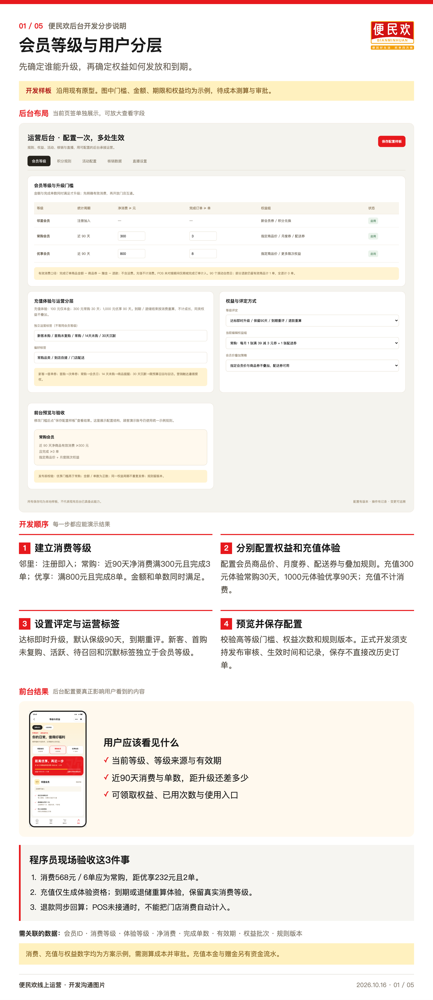
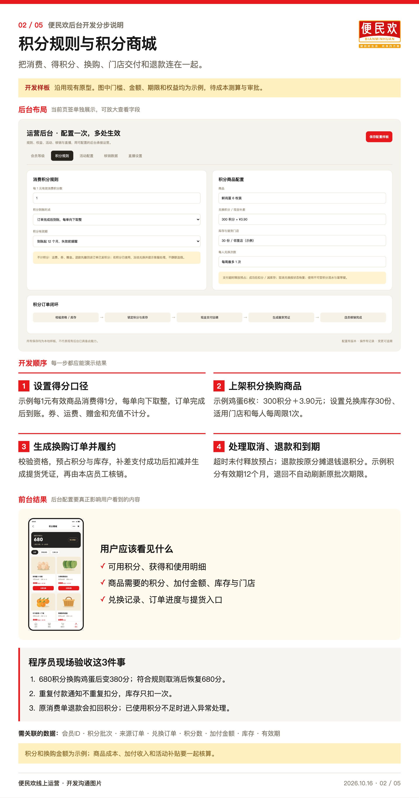
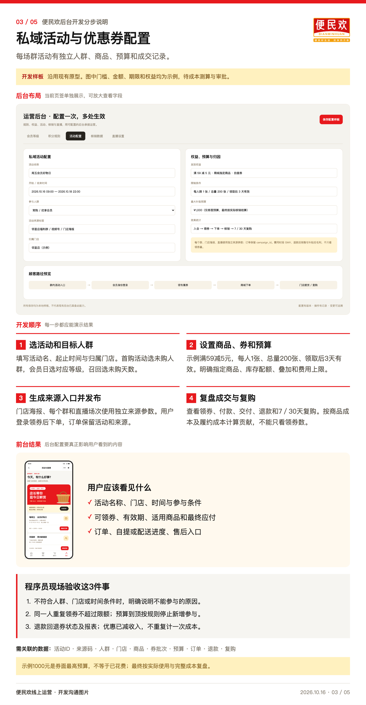
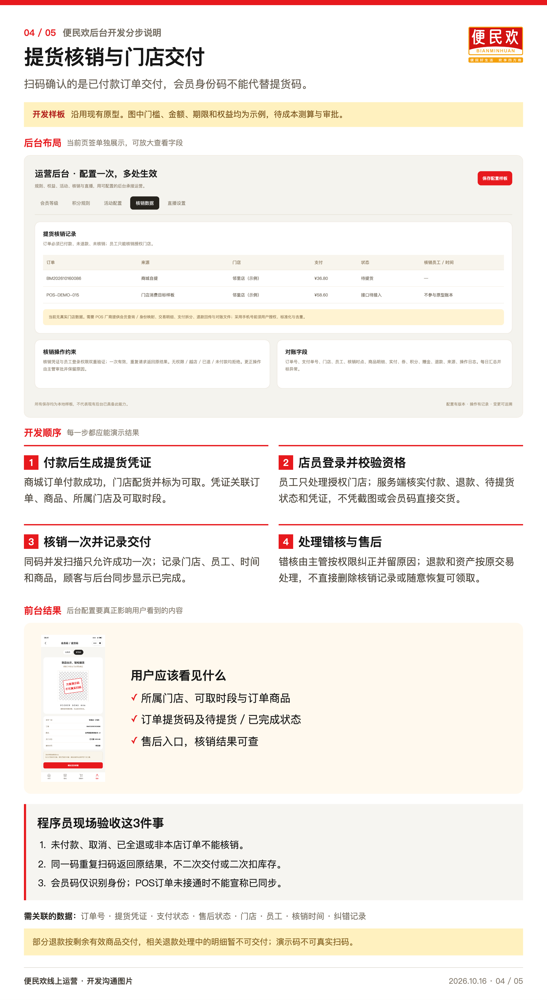
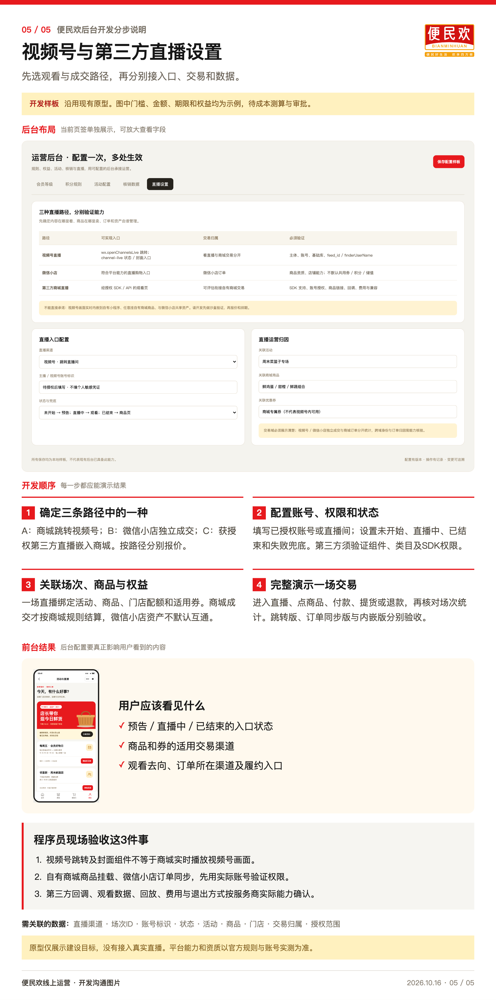

<style id="share-navigation-style">
.share-navigation{position:relative;z-index:30;display:flex;gap:8px;align-items:center;flex-wrap:wrap;padding:11px 24px;background:#211f1b;color:#fff;font:14px/1.5 "PingFang SC","Microsoft YaHei",sans-serif;box-sizing:border-box}
.share-navigation a{color:#fff;text-decoration:none;padding:6px 11px;border-radius:6px;white-space:nowrap}
.share-navigation a:hover,.share-navigation a:focus-visible{background:#4b453b;outline:2px solid #ffc928;outline-offset:1px}
.share-navigation a[aria-current="page"]{background:#e7191d}
.share-navigation .share-label{color:#ffdc72;font-weight:700;margin-right:6px}
.share-navigation small{font-size:11px;color:#d4caba;margin-left:auto}
@media(max-width:640px){.share-navigation{padding:9px 12px;gap:4px;font-size:12px}.share-navigation a{padding:5px 8px}.share-navigation small{margin-left:0;width:100%;font-size:10px}}
@media print{.share-navigation{display:none}}
</style><!doctype html><html lang="zh-CN"><meta charset="utf-8"><meta name="viewport" content="width=device-width,initial-scale=1"><title>便民欢后台分步图片</title><style>body{margin:0;background:#f5f3ed;color:#171717;font-family:"PingFang SC",sans-serif}header,main{max-width:1060px;margin:auto;padding:28px 24px}h1{font-size:30px}p{line-height:1.7;color:#746958}nav{display:flex;gap:12px;flex-wrap:wrap}a{color:#b51d20;text-underline-offset:4px}section{margin:24px 0 50px}img{display:block;width:100%;height:auto;border:1px solid #e2d9c9;background:white}h2{font-size:23px}small{font-size:14px;color:#8b8071}</style><nav class="share-navigation" aria-label="方案页面导航"><span class="share-label">便民欢 · 开发沟通</span><a href="../index.html">交互原型</a><a href="index.html" aria-current="page">后台步骤图</a><a href="../brief/index.html">图文方案</a><a href="../downloads/bianminhuan-offline.html" download="便民欢会员商城升级-可转发网页.html">下载离线网页</a><small>方案演示 · 示例参数待确认 · 分享版 2026.10.27</small></nav><header><meta name="robots" content="noindex,nofollow"><link rel="icon" href="../bianminhuan-logo.png"><h1>后台配置 五张开发步骤图</h1><p>每张包含完整后台布局、四步开发顺序、对应前台结果和三个验收场景。图片可单独保存转发，原型不代表已上线能力。</p><nav><a href="#s01">01 会员等级与用户分层</a><a href="#s02">02 积分规则与积分商城</a><a href="#s03">03 私域活动与优惠券配置</a><a href="#s04">04 提货核销与门店交付</a><a href="#s05">05 视频号与第三方直播设置</a></nav><p><a href="便民欢后台五模块分步图片包.zip" download>下载全部图片包</a></p></header><main><section id="s01"><h2>01 会员等级与用户分层</h2><p><a href="步骤图/01-会员等级与用户分层-步骤图.png" download>下载步骤图</a>　<a href="素材/01-会员等级后台.png" download>下载后台原图</a></p></section><section id="s02"><h2>02 积分规则与积分商城</h2><p><a href="步骤图/02-积分规则与积分商城-步骤图.png" download>下载步骤图</a>　<a href="素材/02-积分规则后台.png" download>下载后台原图</a></p></section><section id="s03"><h2>03 私域活动与优惠券配置</h2><p><a href="步骤图/03-私域活动与优惠券配置-步骤图.png" download>下载步骤图</a>　<a href="素材/03-活动配置后台.png" download>下载后台原图</a></p></section><section id="s04"><h2>04 提货核销与门店交付</h2><p><a href="步骤图/04-提货核销与门店交付-步骤图.png" download>下载步骤图</a>　<a href="素材/04-核销数据后台.png" download>下载后台原图</a></p></section><section id="s05"><h2>05 视频号与第三方直播设置</h2><p><a href="步骤图/05-视频号与第三方直播设置-步骤图.png" download>下载步骤图</a>　<a href="素材/05-直播设置后台.png" download>下载后台原图</a></p></section><small>便民欢线上运营 2026.10.16</small></main></html>